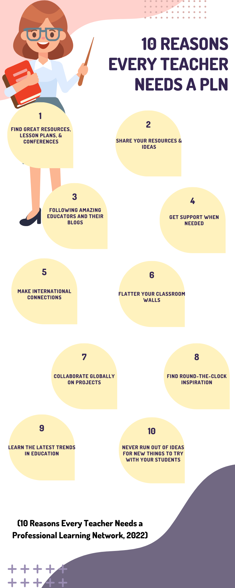

Why are PLNs important?
Participating in a Personal Learning Network (PLN) is one of the best ways for teachers to connect with others to learn ideas, questions, and reflections (10 Reasons Every Teacher Needs a Professional Learning Network, 2022). The infographic below, states ten fantastic reasons why every teacher should belong to a PLN.
As a member of a PLN, you will have access to resources regarding any topic that you choose. One of those topics can include technology integration and emerging technology.
As an educator, we are constantly required to attend professional development sessions to learn the latest pedagogy in education. Oftentimes, the learning we receive in these types of sessions is not relevant to what we teach or our interests. By engaging in personal learning networks, educators can have more control over the content they are learning and can also learn about current trends in education. Personal learning networks can be personalized to the individual.
Content-specific teachers can find benefits in participating in PLNs specifically related to technology because they are able to connect with others who can offer support, share resources, and provide ideas for best practices in integrating technology into their classroom.